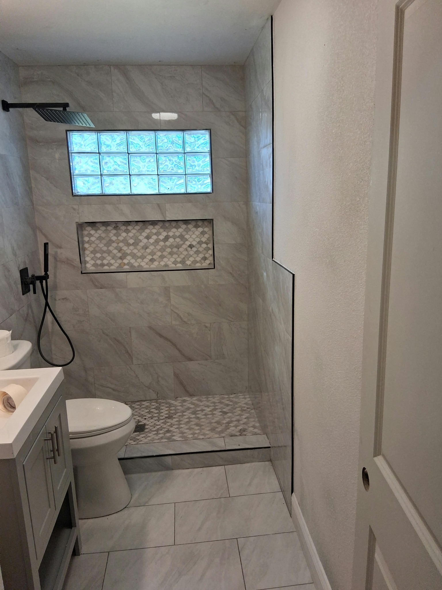
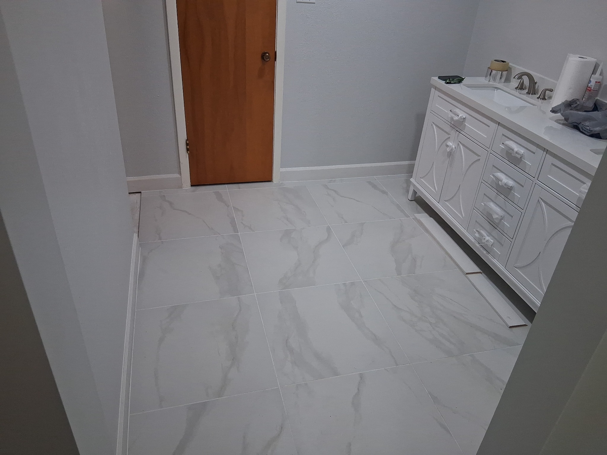

Flooring
Floor installation and clean finishing for bedrooms, living areas, kitchens, and bathrooms.
Ask about flooring →
Garland based · Serving Texas
Flooring, bathrooms, doors, cabinets, sheetrock, and interior finish work—with free estimates.
What we do
Choose a single service or ask about combining work for a larger remodel.
Floor installation and clean finishing for bedrooms, living areas, kitchens, and bathrooms.
Ask about flooring →Tile showers, tubs, bathroom floors, vanities, and complete bathroom updates.
Ask about bathrooms →Replacement and installation for damaged or outdated interior and exterior doors.
Ask about doors →Cabinet installation, backsplashes, and finish work for a cleaner kitchen.
Ask about kitchens →New sheetrock installation, taping, preparation, and wall or ceiling repair.
Ask about sheetrock →Feature walls, trim, paint preparation, and the details that pull a room together.
Ask about finish work →Featured project
A complete space tells the story better than stock photos ever could. Every image on this site comes from real work supplied by Lagos Flooring.
Request your free estimate →

Project gallery
Browse all 24 real project photos. Select a category, then tap any photo to see it larger.
Before & after
Use the divider below to compare the old door with the finished installation.
Simple process
Call, text, or email with the work you need, your location, and any helpful photos.
We’ll discuss the project and provide a free estimate.
If you’re ready to move forward, we’ll plan the next steps with you.
Free estimates
Garland based and available for projects across Texas.